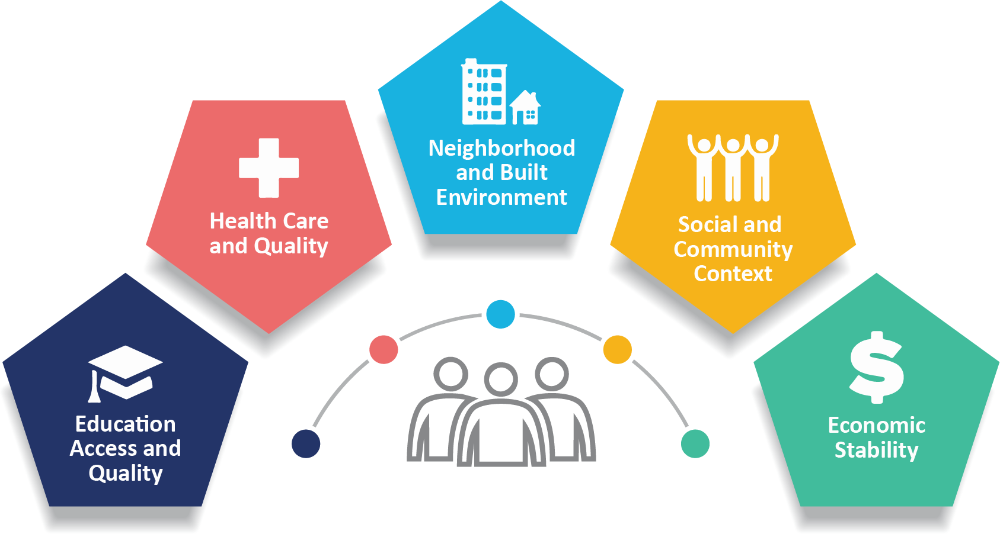
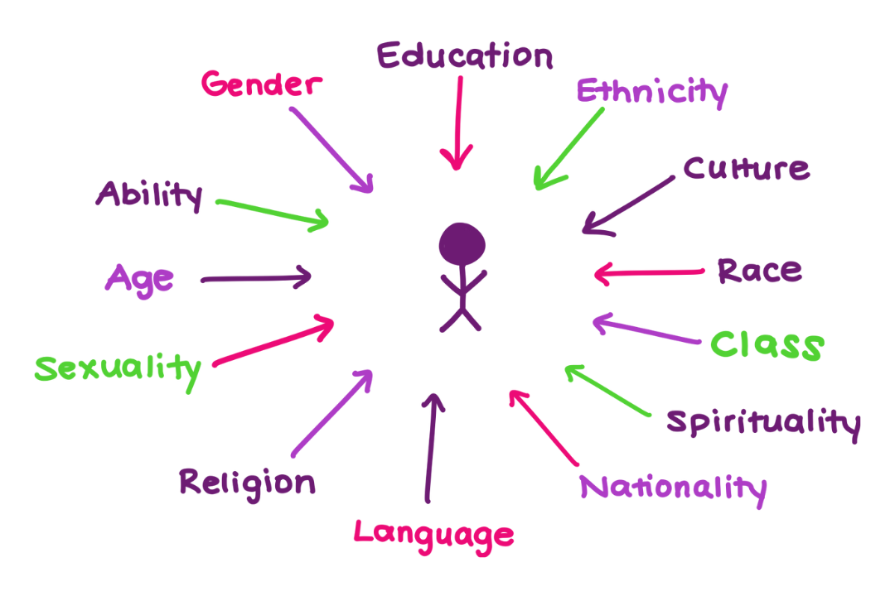

Health & Community Conditions Dashboard
Explore local conditions and health patterns across Colorado.
Explore social, economic, environmental, and community conditions alongside adult health outcomes across Colorado’s 64 counties. Use this Center for Equity Research dashboard to compare places and examine local patterns.
Select an indicator to compare counties. Some social conditions include group-level views from the American Community Survey (ACS); CDC PLACES provides countywide adult health estimates. Comparisons show patterns, not causes.
Frameworks
Social Determinants of Health (SDOH)
Why community conditions matter
Social determinants of health are non-medical factors that affect health outcomes. They include the conditions in which people are born, grow, work, live, and age, along with the broader forces and systems that shape everyday life.

Intersectionality
Overlapping identities matter
Intersectionality, coined by Kimberlé Crenshaw in 1989, highlights how overlapping social identities, such as race, gender, age, nativity, and disability, can produce distinct patterns of advantage, exclusion, and risk. This dashboard only exposes subgroup combinations when the ACS source tables support them objectively. Foundational reference.

Explore Colorado Counties
Select a domain and indicator. Explore population groups where supported by ACS tables; health outcomes show overall adult county estimates from CDC PLACES.
Domain
Indicator
Population Dimension
Subgroup
County Map
Colorado county distribution
Click a county to inspect it, or click the gray background to return to the Colorado-wide summary.
Use the arrow keys to move between counties, Home or End to move to the first or last county, Enter or Space to select, and Escape to clear the selection.
Suppressed
Unavailable / Incomplete
County Comparison
County ranking for current view
Values are modeled age-adjusted estimates. Ordering does not establish statistically significant differences between counties.
Intersectional Insights
Explore poverty, unemployment, and disability through the population groups and intersections supported by ACS data.
Methods and Data Notes
County rebuild
The dashboard includes 8 social-condition indicators from ACS 2024 five-year estimates (2020–2024) and 6 adult health outcomes from CDC PLACES, 2025 release (2023 BRFSS), across 7 domains and 64 Colorado counties.
Health outcome estimates
CDC PLACES uses BRFSS survey responses, Census population estimates, and ACS data to model adult prevalence. Health outcome maps use age-adjusted estimates with 95% confidence intervals. These measures have no published demographic breakdowns. Diagnosed depression reflects lifetime diagnosis history, not current symptoms.
ACS denominator rules
Each metric keeps its ACS-defined universe and denominator. For example, Less Than High School is computed on subgroup members age 25+, not the full subgroup population.
Objective subgroup exposure
Single-dimension and intersectional subgroup options only appear when the underlying source tables can close the rate objectively for that indicator and subgroup structure.
Status and aggregation logic
Suppressed, Unavailable, and Incomplete are distinct from a measured 0%, and statewide ACS insight summaries are recomputed by summing available county numerators and denominators. This aggregation does not apply to age-adjusted health outcomes.
Frequently Asked Questions
Short answers for interpretation and maintenance.
Why do some dimension combinations disappear?
For ACS indicators, the subgroup dropdown shows supported combinations. CDC PLACES health outcomes are available only for all adults aged 18+; population dimension controls are disabled for those indicators.
What does "Suppressed" mean?
Suppressed rows are present in the dataset but flagged for caution by the partner extract. They are distinct from a measured 0%.
What does "Unavailable" mean?
Unavailable means the county row does not have a valid denominator for a rate. It is not the same as a measured 0%.
What does "Incomplete" mean?
Incomplete means the partner extract does not preserve the source columns needed to close an objective county rate. This is different from a zero denominator.
Interested in using this dashboard for policy, practice, or community learning?
Contact the Center for Equity Research with questions about this dashboard, its data sources, or how to interpret the county measures.